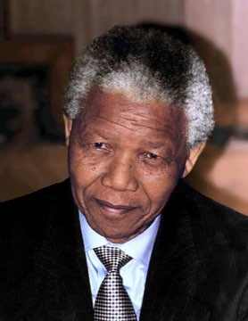

Líder de Estado · África do Sul · 1918–2013
Nelson Mandela O Conciliador
Perdoa sem esquecer a justiça · Mantém a firmeza por décadas · Transforma adversários em parceiros
Passou 27 anos preso por lutar contra o apartheid, o sistema que separava as pessoas pela cor da pele. Ao sair, negociou uma transição pacífica e virou o primeiro presidente eleito por todos os sul-africanos.
“Eu tenho cultivado o ideal de uma sociedade democrática e livre, na qual todas as pessoas vivam juntas em harmonia e com oportunidades iguais.”Discurso no Julgamento de Rivonia, Pretória, 20 abr. 1964
Tema: apartheid e reconciliação
Ficha ("Ver mais")
Bio
Advogado, nasceu numa aldeia do povo Xhosa. Liderou o Congresso Nacional Africano (CNA), ficou preso de 1962 a 1990 e foi presidente da África do Sul de 1994 a 1999.
Contexto histórico
Entre 1948 e o início dos anos 1990, a África do Sul viveu sob o apartheid: leis que separavam escolas, bairros e direitos conforme a cor da pele. A maioria negra não podia votar.
O que fez no mundo
Negociou o fim do apartheid com o governo da época, evitando uma guerra civil. Como presidente, apoiou a Comissão da Verdade e Reconciliação, que ouviu vítimas e responsáveis por violações.
Curiosidades
- Recebeu o Nobel da Paz de 1993 junto com Frederik de Klerk, o presidente com quem negociou.
- O dia do seu aniversário, 18 de julho, é o Dia Internacional Nelson Mandela, criado pela ONU.
Por que importa para RI
Mostra como a pressão internacional (sanções e boicotes) e a negociação interna podem encerrar um regime injusto sem guerra. A Comissão da Verdade virou modelo para outros países.
Foto: Kingkongphoto & www.celebrity-photos.com from Laurel · CC BY-SA 2.0 · Wikimedia Commons


.jpg){kind=link}

.jpg){kind=link}
_(cropped).jpg){kind=link}
.jpg){kind=link}


.jpg){kind=link}
.jpg){kind=link}
.jpg){kind=link}

.jpg){kind=link}

.jpg){kind=link}


.jpg){kind=link}


.jpg){kind=link}